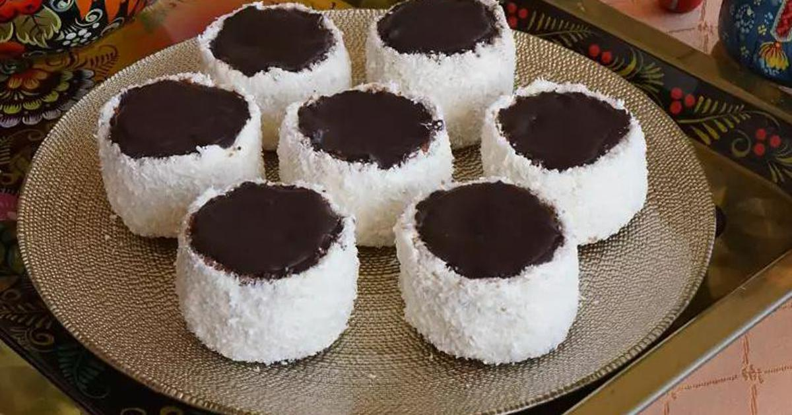

Jaja i šećer pjenasto izmiksati, postupno dodavati vodu i brašno pomiješano s praškom za pecivo i kakaom. Tijesto izliti u lim za pečenje.
Brašno, gustin i šećer umutiti s malo mlijeka, zatim ukuhati u ostatak mlijeka i kuhati oko 10 minuta. U ohlađeno dodati margarin.
Čokoladu i margarin rastopiti na pari.
Iz pečenog biskvita izrezivati krugove, rezati ih na pola, puniti kremom i spajati. Rubove premazati kremom i uvaljati u kokos.
Svaku torticu preliti čokoladnom glazurom i ostaviti da se ohladi.